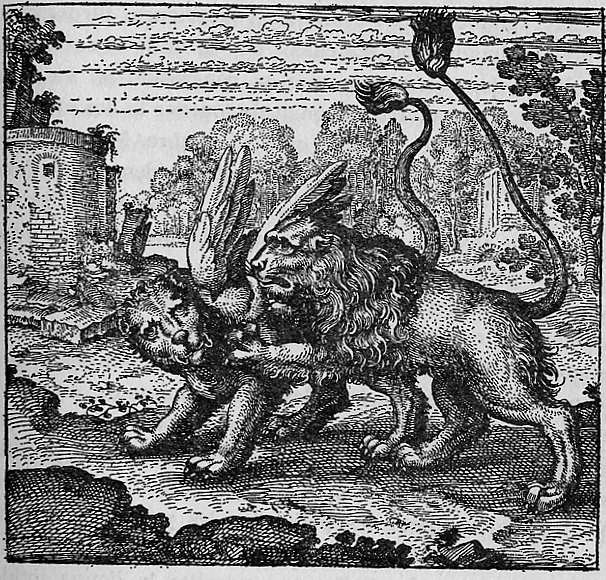

Two lions face each other in a confrontational pose. One is winged — feathered pinions spread from its shoulders — while the other is wingless, planted firmly on the ground. The contrast between the aerial, volatile lion and the grounded, fixed lion dominates the composition. The landscape behind them is open, with distant hills or mountains.
The feathers one lion has not, the other has.
Maier develops the two lions as figures for the volatile and fixed principles of the alchemical work. The winged lion represents the philosophical mercury — fugitive, aerial, unstable — while the wingless lion is the philosophical sulphur — earthy, fixed, enduring. He argues that mastery requires capturing the winged lion and joining it to its wingless counterpart, producing a stable union of volatile and fixed. The discourse connects the lion's magnanimity in classical natural history to the nobility of the alchemical substances, and draws on the solar symbolism of the lion as the king of beasts to establish its connection to gold and the citrinitas stage of yellowing.
Emblem XVI bears the motto: "The feathers one lion has not, the other has."
Maier develops the two lions as figures for the volatile and fixed principles of the alchemical work. The winged lion represents the philosophical mercury — fugitive, aerial, unstable — while the wingless lion is the philosophical sulphur — earthy, fixed, enduring. He argues that mastery requires capturing the winged lion and joining it to its wingless counterpart, producing a stable union of volatile and fixed.
De Jong's source-critical analysis identifies the textual traditions Maier draws upon for this emblem.
The discourse draws on alchemical sources: Lambsprinck, De Lapide Philosophico, Lullius tradition (via Harmonica Chemica), Senior Zadith (Muhammad ibn Umail), Tabula Chimica.
Walter Pagel: Union of winged (Mercury) and wingless (Sulphur) lions.
Walter Pagel: Pagel identifies the winged lion in Emblem XVI as volatile Mercury (primeval water, moon) to be united with the wingless lion (Sulphur, sun), demonstrating Maier's systematic use of alchemical opposition symbolism.
H.M.E. de Jong: De Jong traces the source imagery to Senior's Tabula Chimica and Lambsprinck's De Lapide Philosophico, identifying the two lions as complementary representations of the volatile and fixed principles. She demonstrates how Maier draws on medieval and Renaissance alchemical bestiary traditions to develop the lion as a solar symbol of the citrinitas stage.
Process: Sublimatio
Substance: Luna, Mercurius (Mercurius Philosophorum), Sulphur
Union of winged (Mercury) and wingless (Sulphur) lions.
Citation: Review discussion
Pagel identifies the winged lion in Emblem XVI as volatile Mercury (primeval water, moon) to be united with the wingless lion (Sulphur, sun), demonstrating Maier's systematic use of alchemical opposition symbolism.
Citation: p. 101
De Jong traces the source imagery to Senior's Tabula Chimica and Lambsprinck's De Lapide Philosophico, identifying the two lions as complementary representations of the volatile and fixed principles. She demonstrates how Maier draws on medieval and Renaissance alchemical bestiary traditions to develop the lion as a solar symbol of the citrinitas stage.